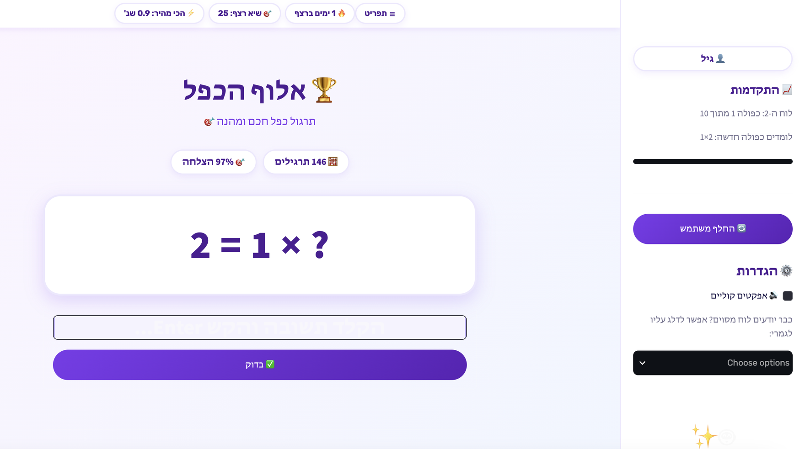

נגיד את זה בקול
לשבת עם ילד ולתרגל לוח כפל זה משעמם. לשניכם.
אותה שאלה, שוב ושוב, ערב אחרי ערב — וברגע שאתם לא שם, זה נעצר. TimesTable לוקחת מכם את החלק המשעמם: עוזר ה-AI נותן את הרמז במקומכם, בדיוק כשצריך. הילד/ה ממשיכים לבד. אתם סוף סוף מחוץ לתמונה.
Windows ו-Mac בלי כרטיס אשראי הנתונים נשארים אצלכם

הסוד שלנו
יש לנו שיטה. אנחנו לא הולכים לספר בדיוק איך היא עובדת.
מה שכן נגיד: היא עוקבת אחרי כל ילד/ה בנפרד, ואחרי כל תרגיל בפני עצמו — לא אחרי "לוח הכפל של 7", אלא אחרי 7 × 8 ספציפית. היא יודעת מה נשכח, במה עדיין מהססים, ומה כבר יושב.
ואז היא מביאה בדיוק את מה שצריך, ברגע הנכון. בלי שאתם צריכים להבין את זה. בלי שהילד/ה מרגישים שמישהו עוקב.
כרגע 7 × 8 עדיין לא ממש בטוח. המערכת כבר יודעת — והיא תחזור אליו, בניסוח קצת שונה.
↖ העבירו את העכבר על הלוח
בתוך האפליקציה
שלושה רגעים שההורה כבר לא צריך להיות בהם.
01 — תשובה נכונה
חיזוק מיידי, בשם של הילד/ה.
כל תשובה נבדקת באותו רגע. נכונה מקבלת יותר מסימן וי — משפט אישי, בעברית, שמתייחס לרצף ולקצב של הילד/ה עכשיו. זה מה שמחזיר אותם לשאלה הבאה.
02 — טעות
הרגע שבו בדרך כלל קוראים לאבא.
במקום "לא נכון, נסה שוב", עוזר ה-AI מסביר. בעברית, בגובה העיניים, עם הדרך לחשוב על התרגיל — לא רק התשובה. זה החלק שבגללו הילד/ה יכולים להמשיך לבד.
03 — סוף התרגול
מישהו שם לב למה שהם עשו.
בסוף כל סבב הילד/ה מקבלים סיכום אמיתי: כמה תרגילים, איזה רצף, ומה השתפר. לא ציון — הכרה. וזו הסיבה שהם פותחים את זה שוב מחר.
המוצר
TimesTable — תרגול כפל אדפטיבי ללוחות הכפל 1–10.
- עוזר AI במקום ההורה. נותן רמז בעברית באותו רגע שנתקעים.
- מתאימה את עצמה אוטומטית, כפולה אחר כפולה — בלי הגדרות לקבוע, בלי מישהו שמשגיח.
- רצה על המחשב שלכם. נתוני התרגול של הילד לעולם לא יוצאים מהמכשיר.
- פרופיל מהיר לכל ילד. שם משתמש בלבד, בלי סיסמה — אין מה להפסיד.
- מתחילים בחינם, בלי כרטיס אשראי. תרגול מלא בכל הלוחות — ותשלום חד-פעמי רק לאחר שכובשים לוח כפל ראשון.
שאלות
מה שהורים שואלים לפני שמורידים.
באמת בחינם, או שיש כוכבית?
לאן הולכים הנתונים של הילד?
מאיזה גיל זה מתאים?
כמה זמן תרגול ביום?
אני צריך לשבת לידם?
להתחלה
מתחילים בחינם. הערב.
הורדה מיידית ל-Windows ול-Mac, בלי כרטיס אשראי. הילד/ה מתרגלים בחופשיות בכל לוחות הכפל עד שכובשים את הלוח הראשון — ורק אז נפתחת גישה מלאה להמשך, בתשלום חד-פעמי אחד. נתוני התרגול נשארים תמיד על המחשב שלכם.